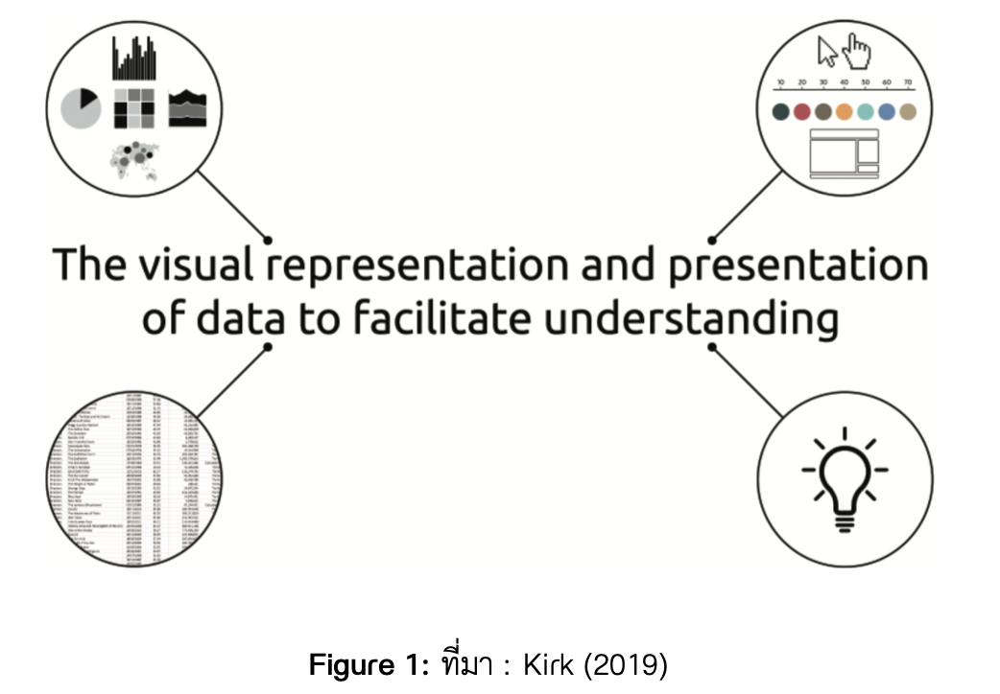
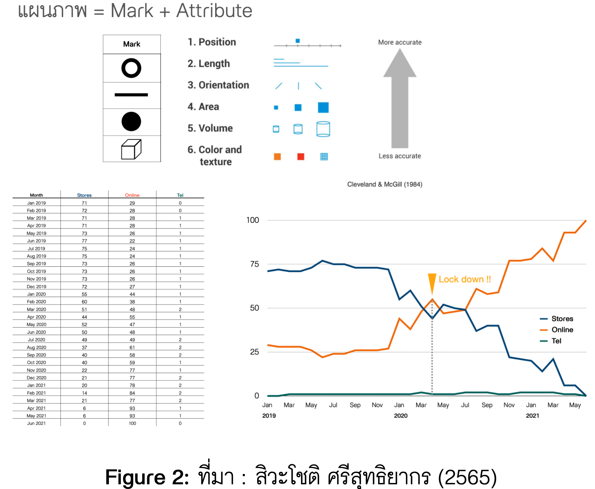
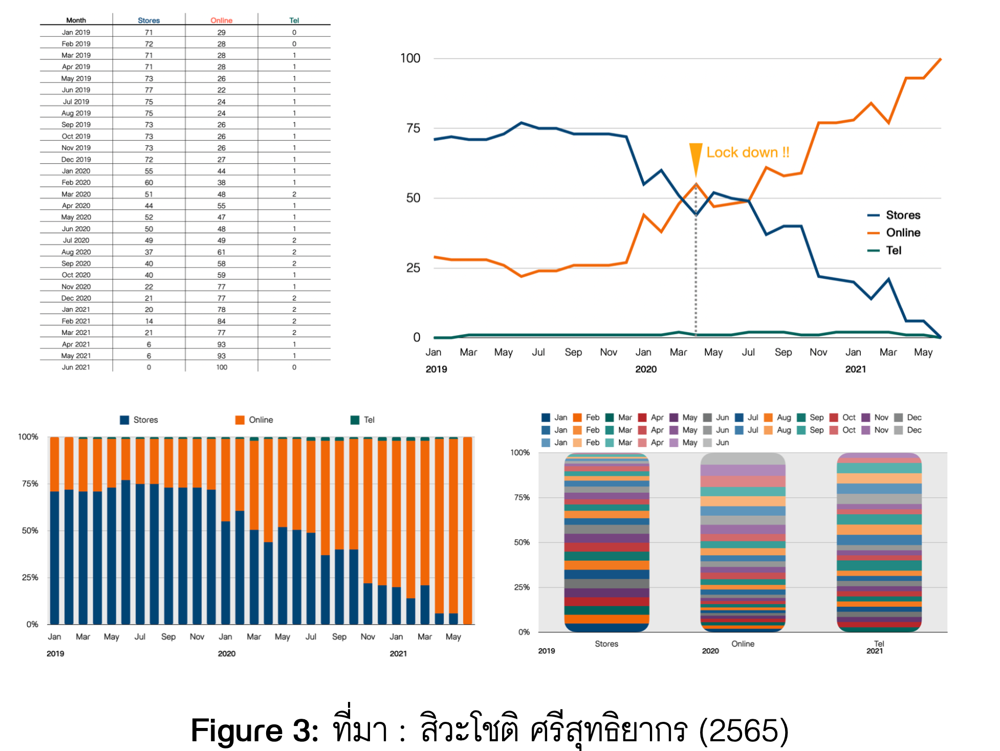
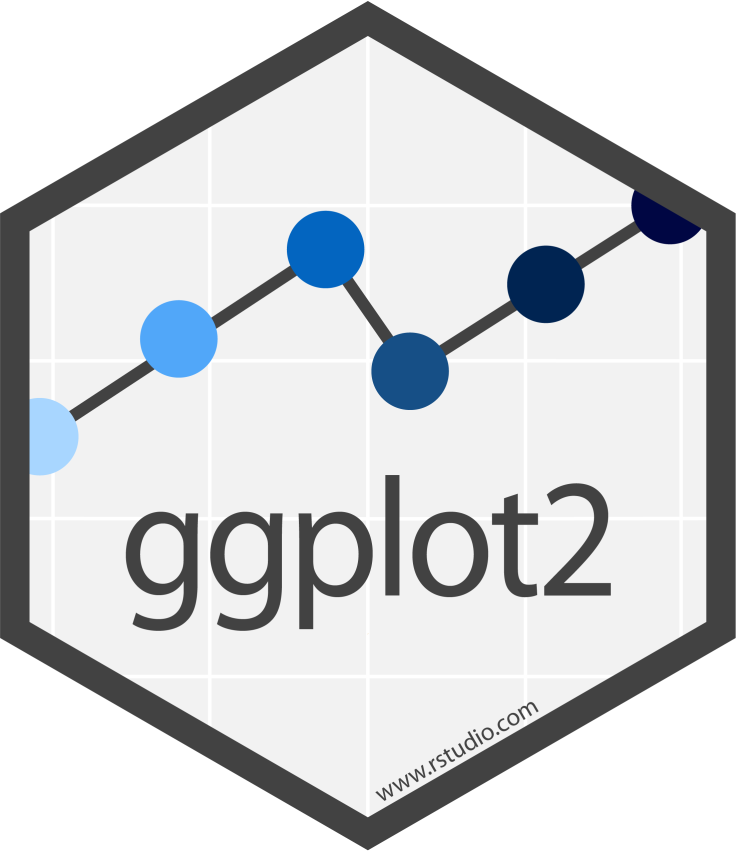
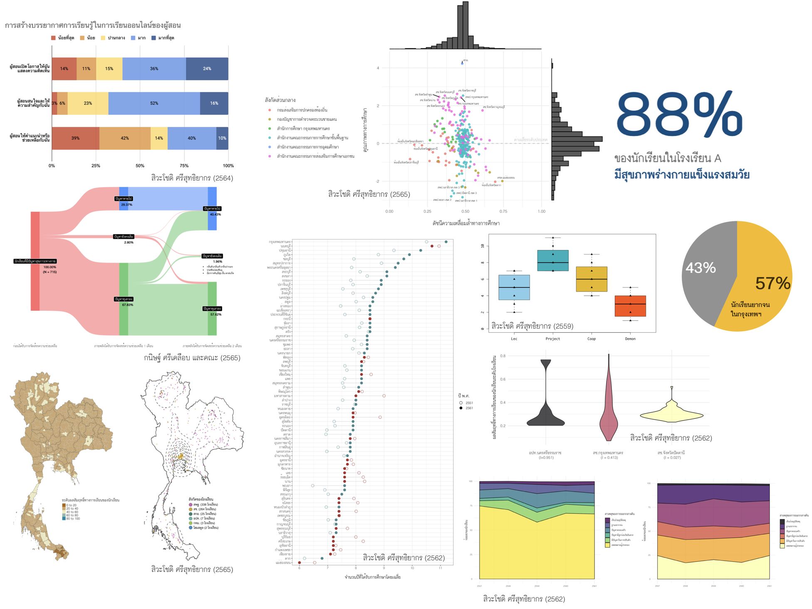
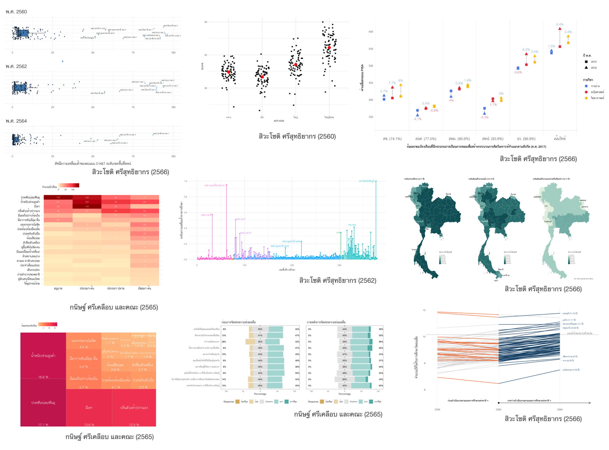
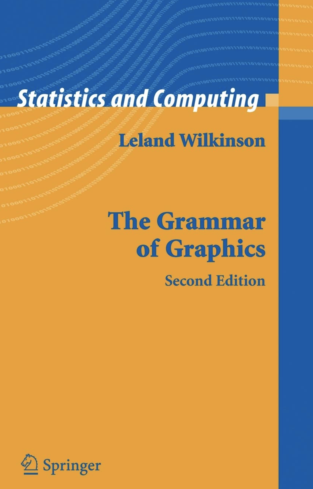
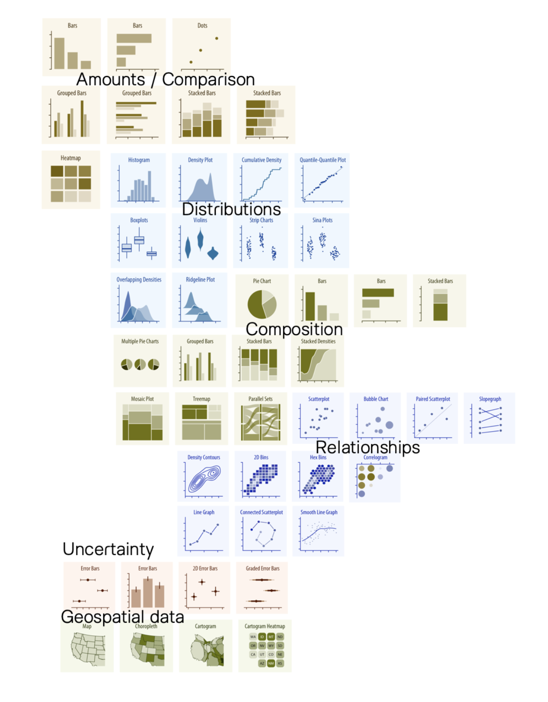

6. Basic Visualization using ggplot2
Practical Insight: Doing Data Science in Education with R
1 Basic Visualization
1.1 Definition

1.2 Visual Representation

1.3 Visual Representation

2 Basic ggplot2
2.1 ggplot2

Open-source data visualization package for R and Python users
พัฒนาโดย Hadley Wickham และทีมงาน
Based on “Grammar of Graphics”
consistent and intuitive framework
powerful
flexible
2.2 Data visualization with ggplot2

2.3 Data visualization with ggplot2

2.4 The grammar of graphics (GG)

กรอบแนวคิดเชิงทฤษฎีใช้อธิบาย ขั้นตอนวิธี (algorithm) สำหรับสร้างทัศนภาพข้อมูล ซึ่งถูกนำไปใช้อย่างแพร่หลาย
Polalis —> Tableau
Vega-Lite
2.5 Graphics
2.6 Decompose Graphics
สาระสำคัญของกรอบแนวคิดใน grammar of graphics กล่าวถึงการสร้างทัศนภาพข้อมูลใด ๆ จากการผสมองค์ประกอบหลักจำนวน 8 องค์ประกอบเข้าด้วยกัน (ใน ggplot2 เรียกองค์ประกอบเหล่านี้ว่า layers) องค์ประกอบดังกล่าวได้แก่ data, aesthetic mapping, geometries, scales, statistical transformations, facets, themes, coordinates
โครงสร้าง syntax ของ ggplot2
ggplot(data = <DATA>) +
<geom function>(mapping = aes(<mappings>),
stat =<STAT>) +
<coordinate function>() +
<scale function>() +
<theme function>() +
<facet function>() +
...2.7 Data
Dataframe/tibble ที่บันทึกข้อมูลดิบที่จะใช้สร้างทัศนภาพข้อมูล
ชุดข้อมูลมีข้อตกลงเบื้องต้นคือต้องอยู่ในรูปแบบ tidy data และถูกทำความสะอาดมาเรียบร้อยแล้ว ผู้วิเคราะห์สามารถใช้ tidyr/dplyr เพื่อจัดระเบียบและจัดกระทำข้อมูลก่อนนำเข้าใน ggplot2 หรืออาจดำเนินการระหว่างนำเข้า ggplot2 ก็ได้ ดังตัวอย่างคำสั่งต่อไปนี้
2.8 Aesthetic mapping
เป็นส่วนการแปลง variation ในข้อมูลให้อยู่ในรูปของ attribute ต่าง ๆ ในทัศนภาพข้อมูล รายการด้านล่างแสดง aesthetic mapping สำหรับทัศนภาพข้อมูลส่วนใหญ่
x,ycolorหรือcolfillalphashape
sizelinetypelabelgroup
2.9 Geometric objects (geoms)

2.10 Geometric objects (geoms)
ใช้กำหนดสัญลักษณ์เชิงเรขาคณิตต่าง ๆ ที่จะใช้พล็อตข้อมูลบนทัศนภาพ สัญลักษณ์ที่กำหนดในขั้นตอนนี้จะคุณลักษณะที่ผันแปรตามข้อมูล ตามที่กำหนดไว้ใน aesthetic mapping
Amounts
geom_bar()geom_col()geom_dotplot()geom_tile()
Relationships
geom_point()geom_line()geom_smooth()
Distributions
geom_histogram()geom_density()geom_boxplot()geom_violin()geom_jitter()
Composition
geom_area()
2.11 Other components
Scales เมื่อตัวแปรถูกแปลงให้มาอยู่บน attribute ของทัศนภาพข้อมูลผ่าน aesthetic mapping แล้ว ขอบเขตหรือช่วงที่เป็นไปได้ของความผันแปรของ visual element ต่าง ๆ บนทัศนภาพจะเรียกว่า scale การปรับแต่ง scale ของแผนภาพให้ตรงกับความต้องการของผู้วิเคราะห์สามารถทำได้ผ่านฟังก์ชัน
scale_XXX_YYY()โดยที่ XXX คือชื่อของ aesthetic และ YYY คือชื่อของ scale ที่ต้องการปรับแต่ง เช่นscale_x_continuous()หรือscale_color_manual()Theme เป็นการปรับแต่งคุณลักษณะต่าง ๆ ของทัศนภาพข้อมูล เช่น สีพื้นหลัง สีของกรอบแกน สีของตัวอักษร และอื่น ๆ ผ่านฟังก์ชัน
theme()
3 กิจกรรม : My First Scatter plot
ติดตั้ง library-
gapminderและggplot2นำเข้าข้อมูล
gapminderโดยพิมพ์คำสั่งlibrary(gapminder)และgapminderลองสำรวจข้อมูลเบื้องต้น ชุดข้อมูล
gapminderมีตัวแปรกี่ตัว และมีข้อมูลกี่แถวขั้นตอนต่อไปนี้จะเริ่มสร้าง scatter plot ด้วย ggplot2
พิมพ์คำสั่ง
ggplot(data = gapminder)ผลลัพธ์ที่ได้เป็นอย่างไรเพิ่ม aesthetic mapping โดยพิมพ์คำสั่ง
ggplot(data = gapminder, aes(x = gdpPercap, y = lifeExp))ผลลัพธ์ที่ได้เป็นอย่างไรเพิ่ม geometric object โดยพิมพ์คำสั่ง
ggplot(data = gapminder, aes(x = gdpPercap, y = lifeExp)) +
geom_point()4 กิจกรรม : Creating any plots with ggplot2
จำนวนประเทศจำแนกตามทวีปเป็นอย่างไร ในปี 2007
การแจกแจงของ lifeExp กับ gdpPercap ในปี 2007 มีลักษณะเหมือนหรือแตกต่างกันอย่างไร
การแจกแจงของอายุขัยเฉลี่ยของประชากรในปี 2007 ระหว่างประเทศที่มี gdpPercap มากกว่า 10000$ กับต่ำกว่า 10000$ เหมือนหรือแตกต่างกันอย่างไร
อายุขัยเฉลี่ยของประชากรในทวีปเอเซียมีแนวโน้มเปลี่ยนแปลงอย่างไรในช่วงปี 1952-2007
- line plot
- boxplot
- heatmap
- เปรียบเทียบสัดส่วนประเทศที่มีค่า gdpPercap มากกว่า 10000$ กับต่ำกว่า 10000$ ในช่วงปี 1952 - 2007